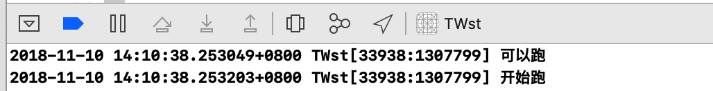

前两天同事，提了个有点意思的问题，今天突然想起来就整理一下,顺便谈一下自己的理解。
下面的这段代码会怎么打印？
Dog * dog = [Dog new];
dispatch_after(dispatch_time(DISPATCH_TIME_NOW, (int64_t)(1 * NSEC_PER_SEC)), dispatch_get_global_queue(0, 0), ^{
dispatch_async(dispatch_get_main_queue(), ^{
if(dog.run){
dog.run();
NSLog(@”开始跑”);
}else{
NSLog(@”跑不了”);
}
});
});
sleep(5);
[dog setRun:^{
NSLog(@”可以跑”);
}];
代码解释：
第一步：创建一个 名为 dog的对象。
第二步：在GCD的延时函数中，异步到主队列判断是否可以调用dog的run闭包，并进行相关处理。
第三步：调用sleep函数 让线程暂停5秒。
第四步: dog的run闭包的实现，并在实现中打印消息。
最后的输出结果是:

为什么会是这样的输出或者执行顺序呢？ 思考这个问题，我们不妨可以考虑一下几种情况：
第一种：
延时函数，改为在main queue中调用。

第二种情况:
在延时函数的调用中，把异步改为同步。

第三种情况:
我们把sleep函数的调用 注释掉。

在以上三种的打印中，会是怎么打印的？
其实打印的结果都是一样的。
为什么呢？
我们可以看一下 “简化后”的代码:

上面的代码，我想应该是很容易理解的 首先执行异步操作到主队列中去提交任务，然后执行 dog 闭包的实现，最后的输出结果是：
先打印： 可以跑
然后打印：开始跑。
这段代码的执行，我们可以这么理解：
1、在主队列中，执行异步到主队列 将 dog对象的闭包调用 提交到主队列中去执行。
2、紧接着 dog对象的run闭包的实现。
执行的顺序我们可以这么理解:

如上图所示:
也就是说首先执行到 dispatch_async这个函数， 因为它是异步的 不会卡死当前的线程，所以main queue 或者说 主线程 会继续往下执行，也就是会执行到 dog对象的实现。而异步执行的任务是提交到 主队列中的，我们知道主队列是不具有并发执行的能力的。 所以此时，执行到 调用dog对象的run闭包，可以正常调用。
如此，最开始的问题，我们也就水到渠成可以理解了。
在上面提及的几种情况，其执行的主要步骤机制便是如此,所以结果也是如此。
提出问题的情况中我们需要注意一下几点:
1、虽然延时函数的调用并没有什么意义，但是我们需要注意延时函数执行的队列，然后在延时函数的调用中，考虑使用 同步还是异步，避免死锁的问题。
2、我们常说的异步执行或者同步执行 需要注意的是都是相对于当前的线程，但是具体会不会开辟新的线程去执行任务，还要看所处于的执行的队列。
3、sleep函数是谁调用，谁就会去睡觉，而且sleep并不会让出所使用的系统资源，除非强行interrupt.
4、看问题，我们要尽量去掉 一些天花乱坠的掩饰 (如上面的 延时调用、线程休眠等)，只有直视问题本身，才会得到最真实的答案。